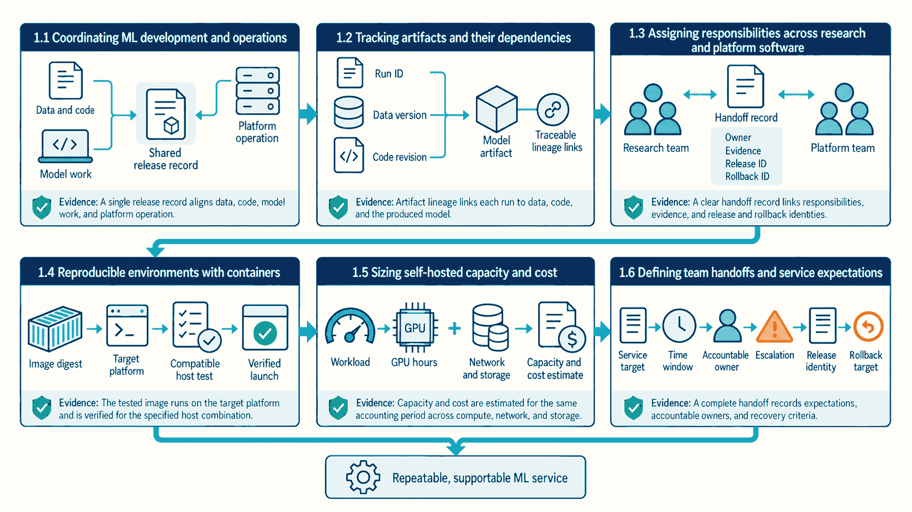

1 Making machine learning runs reproducible
When a model run’s code, data, runtime, or approval record is unclear, another engineer cannot reliably reconstruct what was tested or decide whether that version is ready to deploy. Production adds shared resources, failures, and evidence requirements. Identified artifacts, an explicit responsibility split, and suitable infrastructure turn an ad-hoc run into a repeatable system.
Chapter map: reproducible machine learning runs
The sections answer three linked questions:
- 1.1–1.3: Which records identify a tested run, and who operates the surrounding platform?
- 1.4: How does an image build recipe create a portable runtime?
- 1.5–1.6: Can the selected service meet demand, and which team is responsible for each setting and handoff?

1.1 Coordinating ML development and operations
One experimental run proves that code can run once. The unresolved problem is making the same intent repeatable for other people, machines, and dates. The next steps record the inputs, choose compute, store the outputs, and make recovery possible.
- Machine Learning Operations (MLOps): The combined engineering practice for automating, operating, measuring, and scaling training, inference, and data pipelines.1
Complete details for every cited source appear in References.
For the grounded-answer service in the Introduction, MLOps keeps the records that show which model revision, prompt, and document snapshot produced a disputed answer. It records a candidate model’s inputs, requests the required compute, stores outputs with their history, supports rollback, and turns production evidence into the next evaluation or training case. Inference uses fixed trained parameters to produce an output, while training changes them and evaluation checks results without changing them, as established in the Introduction.
Four disciplines contribute to the work:
- Machine learning: defines the model, objective, data meaning, and quality measurements.
- Software engineering: turns experimental logic into testable packages, APIs, and maintainable interfaces.
- Data engineering: moves, validates, transforms, and retains the records that training and evaluation consume.
- DevOps and platform engineering: provisions compute, deploys services, isolates tenants, observes failures, and automates recovery.
System principle
Operational reproducibility starts with version tracking across software and data dependencies:
- A versioned production bundle contains the weight file together with code, data definitions, model artifacts, runtime configuration, infrastructure assumptions, and evaluation evidence.
- If one ingredient changes without a new identity, the record no longer identifies the tested combination. Version tracking supports reconstruction and rollback targeting, but does not guarantee identical numerical results across hardware, platforms, or software releases.2
1.2 Tracking artifacts and their dependencies
Even with those disciplines in place, coordination fails when their outputs are stored as unnamed local files or remembered commands. Explicit artifact types and immutable input-output links let an engineer trace a result back to the run that produced it.
- Artifact: A stored, addressable record or output that the lifecycle uses or produces. Its identity can link directly to the code, configuration, and inputs associated with it.
A working artifact inventory contains seven objects. It is not a universal minimum. Execution starts from an immutable source revision, such as a Git commit SHA or locked source archive, in a recorded environment. A container image digest identifies Python dependencies, user-space CUDA libraries, and framework versions. A separate record identifies the host driver, kernel, and hardware.3 Training consumes a versioned dataset snapshot with schema validations and split definitions. Its run configuration records hyperparameters, random seeds, and compute requests.
Checkpoint is a step-indexed record of model weights, optimizer buffers, and other training state from which a compatible run can resume. Evaluation jobs produce a record linking dataset slices, metric scores, and raw model outputs. Serving bundle is an immutable package of approved model weights, tokenizers, runtime engine flags, and release gates. Chapter 4 develops the bundle into a deployable unit. Chapter 8 extends it with the retrieval collection that the grounded-answer service also needs.
Lineage is the directed relationship between these objects.4 A metric points to exact evaluation outputs. Those outputs point to model and dataset versions. A deployment points to the serving bundle that passed its gates. A filename such as model-final-v2.bin carries none of those links.
| Stage | Input identity | Output identity | Evidence to retain |
|---|---|---|---|
| Data preparation | Raw snapshot + transform revision | Curated dataset version | Schema checks, row counts, rejected records |
| Training | Dataset + code + config + environment | Checkpoint version | Loss/throughput traces, hardware, seed |
| Evaluation | Checkpoint + evaluator + cases | Evaluation run | Raw verdicts, slices, aggregate metrics |
| Deployment | Serving bundle + policy | Release version | Performance, quality, safety, rollback gates |
| Operation | Release + live traffic | Telemetry and incidents | Logs, metrics, traces, sampled outcomes |
Troubleshooting walkthrough: reconstructing a failed training run
This incident investigation traces a failed checkpoint through its lineage to restore execution:
- Observed symptom: The evaluation task reports a missing checkpoint after the training worker exited.
- Identity lookup: The run manifest resolves the source revision, image digest, dataset snapshot, configuration hash, worker attempt, and expected checkpoint generation.
- Lineage check: The artifact store contains an attempt-scoped temporary file but no committed completion manifest, so the output is not treated as consumable.
- Recovery decision: The pipeline retries from the last complete checkpoint with the same immutable inputs, while the failed attempt and its logs remain attached to the run.
- Evidence retained: The final record links the failure, retry, checkpoint generation, evaluator result, and release decision without relying on a remembered command.
- Conclusion: For this missing-checkpoint failure, output identity, publication state, and retained worker logs show which attempt failed and which checkpoint remains safe to restore.
1.3 Assigning responsibilities across research and platform software
Versioned artifacts make work reproducible. The next choice is how much control the workload needs over its runtime, hardware, network, and recovery, compared with the platform work that a provider performs. A managed service can shift some platform work to the provider while the customer retains other duties.5 Managed services, Kubernetes, virtual machines, and bare metal divide control and responsibility differently. Kubernetes itself can be managed or self-managed.
- Infrastructure responsibility: The division of infrastructure work between the application team and a platform or cloud provider.
The comparison below is illustrative, not a strict product ordering. Serverless services reduce machine-management work, while runtime, networking, accelerator, and customization limits depend on the service. Virtual machines and bare metal expose those controls together with patching, scheduling, recovery, and capacity risk.
| Deployment option | Team controls | Provider controls | Best fit |
|---|---|---|---|
| Function | Code and small configuration | Runtime, scaling, hosts, placement | Short stateless tasks and event handlers |
| Managed container/job | Image, command, resources | Host lifecycle and basic scheduling | Batch preprocessing, fine-tuning, simple inference |
| Managed Kubernetes | Pods, services, policies, schedulers | Control plane; worker-node duties depend on the node service | Multi-service platforms and shared GPU clusters |
| Virtual machine | Operating system upward | Physical host and facility | Custom runtimes, dedicated services, specialized networking |
| Bare metal | Full host software and accelerators | Facility and physical access | Maximum performance and unusual topology needs |
Infrastructure responsibility: purpose and limits
A team may need a custom GPU runtime and detailed network control for a model service, while another team needs a standard endpoint quickly and can accept the provider’s runtime limits. The first team may select a virtual-machine, Kubernetes, or bare-metal path and take on patching, scheduling, recovery, and capacity work. The second may use a managed service, while still remaining responsible for its data, application behavior, access policy, and release evidence. The suitable choice follows the required controls and the work each side can support.
1.4 Reproducible environments with containers
The deployment option determines who manages the host. A container image is one way to package a runtime for development and production, but its reproducibility depends on pinned inputs and a compatible host. With this approach, image construction, registry distribution, and container execution are distinct steps.
Container image: A content-addressed filesystem and configuration template that may contain application code, libraries, and execution defaults. A digest identifies fixed content, while an image tag can change.6
Container: A running process created from an image and isolated with operating-system mechanisms while sharing the host kernel.7
Registry: A service that stores versioned image layers and supplies them to deployment systems.8
A Dockerfile, the image build recipe, can turn declared build inputs into image layers. Stable dependency steps usually precede frequently changing source code, which allows cached layers to be reused.9 Multi-stage builds allow selective copying that can exclude build tools from the runtime image.10 Transfer and security benefits depend on what remains in that image.
Code example: Abbreviated two-stage portability sketch, not a reproducible build until its base image and uv installation are pinned. Base-image files, compatible interpreter paths, system libraries, and separately recorded host requirements remain part of the runtime contract.
FROM python:3.12-slim AS build
WORKDIR /app
COPY pyproject.toml uv.lock ./
RUN pip install uv && uv sync --frozen --no-dev --no-install-project
FROM python:3.12-slim AS runtime
WORKDIR /app
COPY --from=build /app/.venv /app/.venv
COPY src/ ./src/
ENV PATH="/app/.venv/bin:$PATH"
CMD ["python", "-m", "src.service"]Code walkthrough: multi-stage container packaging
This abbreviated portability sketch separates dependency resolution from the final runtime image. It assumes src.service is a source-only module that does not require installed project metadata or generated build files. It is not a reproducible build as shown: its base-image tag and uv installation are not pinned to immutable versions.
- Build stage:
uv, a Python package manager, usesuv sync --frozen --no-dev --no-install-projectto install locked third-party dependencies without trying to install source that has not been copied yet.--frozenuses the existing lock without checking whether it is current, and--no-devomits the development group. This example assumes the default/app/.venvproject environment.11 - Runtime stage:
COPY --from=buildtransfers the resolved environment without transferring the package manager’s build context or compiler tools. - Application layer:
COPY src/appears late, which lets the slower dependency layer remain cached across ordinary source edits. A packaged project instead copies the files needed to install itself and runs a separate locked project-install step. - Startup command:
CMDnames the module that the deployment starts. The image digest identifies this complete filesystem and command. - Result: The runtime image contains its base-image files, copied environment, and service files. The copied environment still needs compatible interpreter paths and system libraries.
- Limits: A reproducible build also pins the base-image digest and package-manager version or checksum, then records the resulting image digest. The sketch also omits a non-root user, health check, vulnerability policy, multi-architecture build, and runtime secret mount. Those are deployment requirements, not implied defaults.
Secrets in copied files or build arguments can persist in layers, metadata, history, or logs. Build-time access should use build-secret mounts, while runtime access uses separately governed runtime secrets.12 Ordinary containers share the host kernel. For untrusted code, stronger isolation such as a sandbox or microVM is a threat-model choice, not a universal container guarantee.
Architecture compatibility: hardware target verification
Processor architecture differences can cause runtime failures across build and execution hosts:
- A laptop with an ARM processor can build an image that may not run on an x86 cloud node without a compatible target image or emulation path.13
- An explicit target platform, immutable digest, and test of the exact production CPU/GPU, driver, and runtime combination provide compatibility evidence for that combination.
1.5 Sizing self-hosted capacity and cost
Containers make a runtime portable across deployment options. A large language model adds expensive accelerators, large weight transfers, and ongoing infrastructure work. The service objective determines the capacity assumptions used to compare hosted APIs with self-hosting.
Available model weights can permit self-hosting and adaptation, subject to the actual license and supplied architecture. Open weights do not by themselves establish unrestricted rights or access to training data. Self-hosting also makes the team responsible for availability, throughput, scaling, security, weight distribution, and evaluation. The decision is therefore not simply price per token: it is a comparison between a provider bill and the full cost of hardware, platform engineering, idle capacity, incidents, and optimization.
\[ C_{\mathrm{total}} = C_{\mathrm{fixed}} + C_{\mathrm{compute}} + C_{\mathrm{storage}} + C_{\mathrm{network}} + C_{\mathrm{operations}} + C_{\mathrm{risk}} - V_{\mathrm{residual}} \tag{1.1}\]
For this one-year comparison, \(C_{\mathrm{total}}\) is the total cost. The terms \(C_{\mathrm{fixed}}\), \(C_{\mathrm{compute}}\), \(C_{\mathrm{storage}}\), \(C_{\mathrm{network}}\), \(C_{\mathrm{operations}}\), and \(C_{\mathrm{risk}}\) are costs in the same currency and period. \(V_{\mathrm{residual}}\) is the recoverable equipment value subtracted from that cost. The relationship is an accounting estimate, not a market-price or availability guarantee.
Example: one-year ownership cost
The following illustrative one-year comparison combines assumed cost components:
- Fixed commitment: Reserved hardware and platform commitments cost $120,000.
- Usage: Compute, storage, and network usage total $205,000.
- Operations: On-call, maintenance, and platform engineering allocate $90,000.
- Risk and residual: Expected interruption or shortage exposure is $30,000, while recoverable equipment value is $10,000.
- Total: The one-year comparison cost is $120,000 + $205,000 + $90,000 + $30,000 − $10,000 = $435,000.
- Conclusion: A fair comparison with an API or managed-service alternative uses the same demand, reliability, and quality assumptions (see Appendix A for the generalized TCO relationship).
\[ R_{\mathrm{needed}} = \left\lceil \frac{Q_{\mathrm{peak}}}{Q_{\mathrm{replica}} \cdot u} \right\rceil + R_{\mathrm{redundancy}} \tag{1.2}\]
\(R_{\mathrm{needed}}\) is the starting replica count. \(Q_{\mathrm{peak}}\) is peak demand in requests per second, \(Q_{\mathrm{replica}}\) is the measured rate per replica at the stated latency target, \(u\) is the planned utilization fraction, and \(R_{\mathrm{redundancy}}\) is the chosen spare count. The ceiling rounds demand up to a whole replica. This is a planning estimate, not proof that queueing and failures will remain within target.
Example: replicas for a 60 request-per-second peak
The following illustrative capacity estimate uses an assumed benchmark, headroom, and failure reserve:
- Measured capacity: One serving replica sustains 8 requests/s while meeting the latency target. Section 4.1 defines the latency measures behind that target and shows how a token rate becomes a request rate.
- Headroom: At 75% normal utilization, an 8 requests/s benchmark yields 6 planned requests/s per replica.
- Demand replicas: A 60 requests/s peak divided by 6 planned requests/s requires 10 replicas.
- Failure allowance: Two additional replicas cover a host-group loss only if placement limits that loss to two replicas and the remaining replicas meet the workload and latency target.
- Starting deployment: Adding 2 spare replicas to the 10 demand replicas produces a 12-replica starting deployment. A load test with the real prompt and output-length mix validates the estimate.
- Conclusion: Capacity must come from measurements of the serving bundle. Model parameter count alone cannot provide it.
The model and decoding choices used to meet a quality target, together with prompt length, output length, quantization, engine version, GPU type, batching, and latency objectives, can change per-replica capacity. The estimate therefore belongs to one exact serving bundle and is measured again whenever one of those ingredients changes.
1.6 Defining team handoffs and service expectations
An engineer may try to fix low throughput by changing an option in the wrong software layer. The responsibility map below separates model code, communication libraries, serving engines, and the orchestrator so that a setting can be traced to the component that uses it.
| Layer | Owns | Examples |
|---|---|---|
| Application | Business request, authentication, quotas, safety policy | FastAPI, gateway services |
| Model/runtime | Tensor execution, gradients or token generation | PyTorch, JAX, Transformers |
| Distributed communication | Process groups and GPU collectives | torch.distributed, NCCL |
| Serving engine | Request scheduling, batching, KV cache, kernels | vLLM, SGLang, TensorRT-LLM |
| Orchestrator | Resource placement, retries, desired state | Kubernetes, Slurm, SkyPilot |
| Pipeline engine | Task dependencies, parameters, history | Airflow, Flyte, Kubeflow Pipelines |
| Observability/evaluation | Telemetry, experiments, test cases, judgments | OpenTelemetry, MLflow, W&B, Langfuse |
| Storage/data system | Durability, sharing, retrieval, replication | Object storage, shared FS, vector databases |
A software knob is a configuration option that changes execution without changing the model architecture. gpu_memory_utilization is a vLLM engine option14, NCCL_DEBUG belongs to the NCCL communication library15, and a Kubernetes GPU resource request belongs to the orchestrator.16 Naming the owner helps teams avoid recommending a setting where it has no effect.
Handoff record: release criteria checklist
A training and operations team can use the following handoff criteria:
- A training team hands over a serving bundle only when the window, accountable owner, escalation path, release identity, rollback target, and evidence links are recorded.
- The receiving team can then answer what changed, which checks passed, who can stop the rollout, and which known-good version is restored if a gate fails.
For example, a team might require bundle B to pass at least 95% of a fixed set of grounded-answer cases and sustain the Section 1.5 peak of 60 requests/s with 95% of responses below three seconds in a load test. These are illustrative release targets, not universal service thresholds. The handoff records the test results and names the on-call operator who stops promotion and restores approved bundle A if fewer than 95% of responses meet the three-second target in a ten-minute rollout window at a comparable request mix. The stop decision has a measurement, an owner, and a known rollback target.
Chapter 1 summary
The run’s identity, runtime, capacity, and team handoffs have different failure points:
- Core mechanisms: Content-addressed container packaging with separately recorded host and CUDA compatibility requirements, explicit artifact lineage across 7 working types, and total-cost and replica-capacity estimates.
- Governing tradeoffs: Multi-stage packaging can reduce runtime contents but requires compatible paths and system libraries. Self-hosting adds fixed, operating, and idle-capacity costs. Managed services exchange some control for provider-operated infrastructure and have their own pricing and latency behavior.
- Failure modes & defenses: Unversioned dependencies obscure reconstruction. The chapter’s primary-responsibility map and operational handoff checklist make ownership, release identity, rollback targets, and evidence explicit.
Chapter checkpoint
Review Questions 1–3 in Appendix B, Section B.1, to test runtime reproducibility, image identity, and replica-capacity estimation before proceeding to cluster training.
Carry-forward result
The operating model now contains immutable artifacts, clear infrastructure and isolation responsibilities, an initial capacity method, and a software responsibility map.
The next chapter applies that model to a training run whose memory and elapsed time exceed one GPU.
Google Cloud. (2024, August 28). MLOps: Continuous delivery and automation pipelines in machine learning. Cloud Architecture Center. https://docs.cloud.google.com/architecture/mlops-continuous-delivery-and-automation-pipelines-in-machine-learning. The official guidance describes automation and monitoring across the ML lifecycle, primarily for predictive AI. The four-role organization is a local operating model.↩︎
PyTorch Contributors. (2024, November 26). Reproducibility. PyTorch 2.8 documentation. https://docs.pytorch.org/docs/2.8/notes/randomness.html. The opening warning limits PyTorch repeatability across releases and platforms. Recording identifiers alone does not establish numerical determinism.↩︎
NVIDIA. (n.d.). Installing the NVIDIA Container Toolkit. NVIDIA Container Toolkit documentation. https://docs.nvidia.com/datacenter/cloud-native/container-toolkit/latest/install-guide.html. The toolkit installation prerequisites require a host NVIDIA driver. An image digest fixes image content, not the host driver or hardware.↩︎
Moreau, L., & Missier, P. (Eds.). (2013, April 30). PROV-DM: The PROV data model. W3C Recommendation. https://www.w3.org/TR/2013/REC-prov-dm-20130430/. PROV-DM Sections 2 and 5 describe use, generation, and derivation links. It does not prescribe these seven objects or certify the recorded relationships.↩︎
Amazon Web Services. (n.d.). Shared responsibility model. https://aws.amazon.com/compliance/shared-responsibility-model/. AWS documents service-dependent responsibility. The table is an illustrative comparison, not a universal ordering of all products.↩︎
Open Container Initiative. (2024). Open Container Initiative image format specification: Image configuration (v1.1.0). Linux Foundation. https://github.com/opencontainers/image-spec/blob/v1.1.0/config.md. The OCI image-configuration specification defines filesystem/configuration identity. It does not require every image to contain a runnable service.↩︎
Souppaya, M., Morello, J., & Scarfone, K. (2017, September). Application container security guide (NIST SP 800-190). National Institute of Standards and Technology. https://doi.org/10.6028/NIST.SP.800-190. DOI: 10.6028/NIST.SP.800-190. NIST SP 800-190 describes ordinary OS containers and shared-kernel risk. VM-backed runtimes and the needed isolation level require a separate threat-model decision.↩︎
Open Container Initiative. (2024). Open Container Initiative distribution specification (v1.1.0). Linux Foundation. https://github.com/opencontainers/distribution-spec/blob/v1.1.0/spec.md. The OCI distribution specification defines registry pull/push of blobs and manifests. This is a simplified introduction to those APIs.↩︎
Docker, Inc. (n.d.). Optimize cache usage in builds. Docker Docs. https://docs.docker.com/build/cache/optimize/. Docker recommends this layer order. Reuse still requires unchanged instructions and relevant inputs.↩︎
Docker, Inc. (n.d.). Multi-stage builds. Docker Docs. https://docs.docker.com/build/building/multi-stage/. Selective COPY between stages is documented. Using two stages alone does not prove a smaller, secure, or complete runtime.↩︎
Astral. (n.d.). Locking and syncing. uv documentation. https://docs.astral.sh/uv/concepts/projects/sync/. uv documents frozen-lock synchronization and development-group exclusion. The environment path is configurable and a stale lock is not rejected by
--frozen.↩︎Docker, Inc. (n.d.). Build secrets. Docker Docs. https://docs.docker.com/build/building/secrets/. Docker warns against ARG/ENV secrets and documents build-secret mounts. Runtime mounts address a different phase and do not remove build-log leaks.↩︎
Docker, Inc. (n.d.). Multi-platform builds. Docker Docs. https://docs.docker.com/build/building/multi-platform/. Docker documents platform-specific images, manifest lists, emulation, and cross-building. The example concerns a single-platform image without a compatible execution path.↩︎
vLLM project. (n.d.). Engine arguments (v0.10.2). https://docs.vllm.ai/en/v0.10.2/configuration/engine_args.html. vLLM 0.10.2 documents the executor memory-fraction setting. It is not a hardware utilization metric, and explicit cache sizing can override automatic cache allocation.↩︎
NVIDIA. (n.d.). Environment variables. NCCL 2.24.3 documentation. https://docs.nvidia.com/deeplearning/nccl/archives/nccl_2243/user-guide/docs/env.html. NCCL 2.24.3 documents this diagnostic variable. Its scope is the communication library, not the serving engine.↩︎
Kubernetes Authors. (n.d.). Schedule GPUs. Kubernetes documentation. https://kubernetes.io/docs/tasks/manage-gpus/scheduling-gpus/. The Kubernetes GPU guide describes device-plugin resources and request/limit rules. The actual resource unit depends on the configured device allocation/sharing mode.↩︎